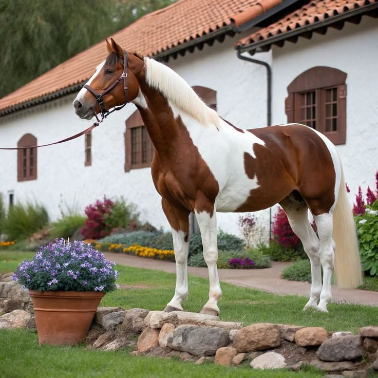
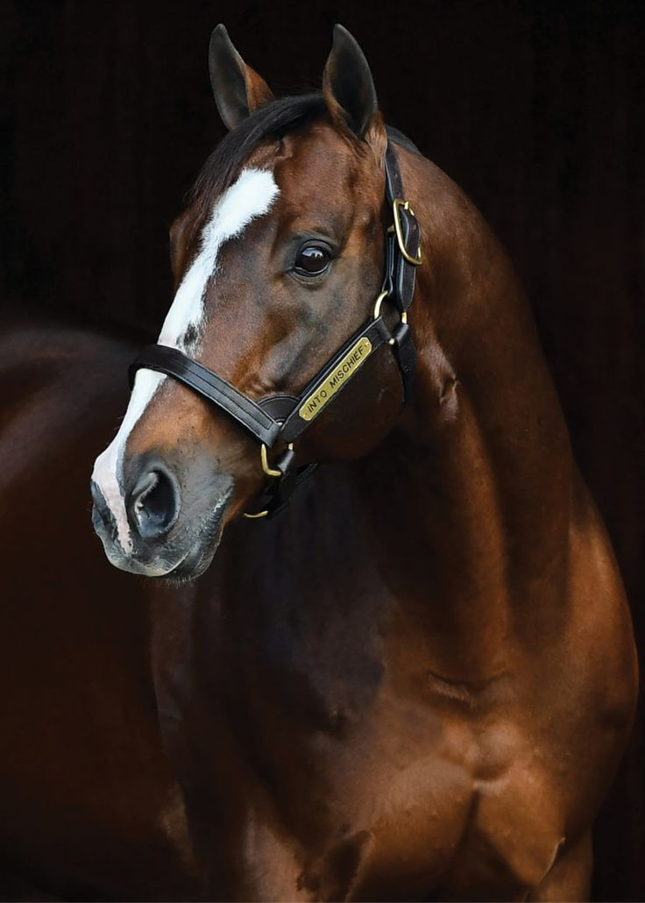

Introduction to the Thoroughbred Horse
The Thoroughbred is a famous horse breed originating from England, widely known for its incredible speed, athletic ability, and competitive spirit. It is primarily bred for horse racing and is considered one of the fastest horse breeds in the world. Its slim, muscular body and long legs make it an exceptional athlete.


- Origin: England, United Kingdom.
- History: Developed during the 17th and 18th centuries.
- Height: Approximately 15.2–17 hands.
- Weight: Approximately 450–550 kg.
- Colors: Bay, chestnut, black, and gray.
- Features: Slim body, long legs, deep chest, and powerful muscles.
- Temperament: Energetic, intelligent, competitive, and sensitive.
- Special Ability: Exceptional speed and athletic performance.
- Uses: Horse racing, show jumping, and eventing.
- Lifespan: Approximately 25–30 years.
- Price:A Thoroughbred horse typically costs between $1,500 and $25,000